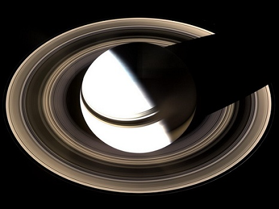
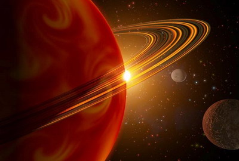
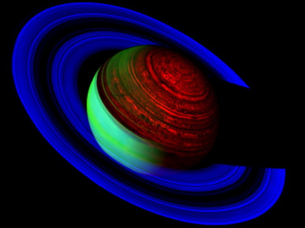
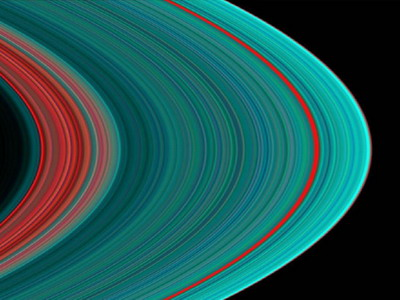
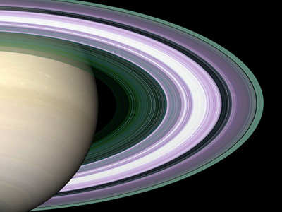

土星千层光环之谜
冯冯
去去来来 / 誊录
“航行者一号”与“二号”宇宙探险船先后拍回了土星照片二十多万张，也带来了一千个谜。
土星为什么会有千多层美丽的光环？是什么构成的？
全世界全人类惊叹着，观看电视上的土星传真。暂时忘却这一个地球上的诸多烦恼──什么石油危机、中东战事、伊拉克伊朗战争、能源荒、地震、火山爆发......一切都显得太渺小了。让我们扩展视界，看看外太空的伟大宇宙吧！
人类为什么那么狭窄心眼？为什么有些人就要非迫害他人不可？为什么非互相残杀不可呢？
人类为什么不团结起来，集中力量，一齐向外太空发展？
单是美国独力发展的太空科学，就已经可以把人类的眼睛带到土星上空去了。假如全世界各国都联合起来发展太空科学，不是更能深入探讨宇宙奥秘吗？
看，土星多么雄伟壮丽！地球人类从未这样接近地观察过土星，从来未发现过土星有那么多的神秘！
三百七十年前，意大利科学家伽利略（Galileo)用原始天文望远镜发现了土星有光环和四个卫星月球，伽利略的望眼镜只有三十二倍，只能望到土星光环是三、四层。
这一次，一九八0年十一月中旬，美国太空署和许多科学研究机构合作的宇宙探险船“航行者一号”(Voyager1)和“航行者二号”已分别先后抵达土星上空。
“航行者一号”向地球拍发回来的电子摄影密码，由美国的管制站收到后，用自动的电脑，将密码数字所代表的颜色、形状， 一微粒一微粒地砌了出来。放射在电视荧幕上的，就是我们现在看到的美丽无比的土星真面目。
美国加拿大两国的科学家，数以百计，每天在电视上举行土星座谈会。为我们分析土星的一切。
“航行者”宇宙探险船两架，两年多之前从美国先后发射，“二号”发射较晚，但是抄了捷径，反而比一号先到木星、土星上空。真正惊人伟大的接近照片，则是“一号”所拍发回来的。
科学逐渐推翻了神权，而且逐渐启发智慧，使人明白其与宇宙的关系，这当然是神权宗教所畏惧而不容的。
美国玛利兰大学的生物学家庞诺培鲁玛博士(Dr.Cyril Ponnamperuma)，还在数年前，已经实验成功了创造人造有机体，他用电流通过氢气、二氧化碳与海水阿摩尼亚等，成功制成了原始的氨基酸有机体，有生命的活动特性。这段新闻曾经轰动全世界，博士说：火山爆发的热岩浆，在海底与海水发生作用，形成原始的氨基酸有机体，是地球上生物的起源。此说当然受到某教的抨击。
佛教并不是一种神权宗教，相反地，佛教是一种科学的宗教。信佛修行，是从自我约束中寻求宇宙的真理。由觉悟而恢复本来的超越时空的大智慧，回返永存于宇宙之中。这种大智慧，是由心力凝聚而成，它有生命的许多形态，但是它是超出于有限有物质生命的，如果一定要用生命的字眼来形容，可以称之为非物质的生命。它被禁锢于物质的生命形体之中，须要直到释放出来，才不受成住坏空的影响。
太空宇宙之中，本来就充满大智慧，即是所谓佛！
这些非物质的智慧“生命”，却不是用有机蛋白质探测仪可以测出的，但是，可以经由心力的接触感觉得到，也有些特制的放射线接受仪可以收到（以前在“内明”已讲过实例）。
阿当斯基飞往土星，并非他的肉体飞去，乃是他的心力飞去，他在土星所遇的，也不是物质的“人类”“外太空人”，实在是非物的“大智慧”──佛。他并不自知，也没有人知道，就都说他的书是“妖言”。
阿当斯基书中说，他在土星上见到许多全身有形无实质，头有五彩光圈的“人”，非常慈祥和蔼，他又见到这些“非人”在金光的宫殿中，又见到来自各星球的“非人”聚会举行会谈。
阿当斯基的书，在一九五0年代，是一场大风暴，说他怎么“妖言”。他书中所述的土星许多特点，当时未有科学发现，如今在一九八0年代，回顾此书，却都证明确有那些情形，例如土星上的光环有千多层，土星上有极强烈的旋风漩涡......等等。
阿当斯基说：那些“非人”讲了很多话，叫地球的人类要慈悲要互相扶持，不可屠杀以趋灭亡，那些“非人”告诉他宇宙“成住坏空”的原理。
阿当斯基没有说这些“非人”是“佛”，但是，这是他无知而已，事实上，他见到的是众佛。
土星，是毗卢遮那佛与观音菩萨的道场之一！
唐代瞿昙悉达所译佛书，已有此记载。
太阳也是观音菩萨常驻所，月球为势至菩萨与千手观音常往处，火星为宝生佛与阿鲁迦观音驻常驻地，水星为微妙庄严身佛道场之一，木星为药师佛传法地之一，金星为阿弥陀佛说法地之一（你可由此知“西方”的又一意义了吧）。
唐代的“梵天火罗九曜”也有此说。
佛教诸经说：生有四类，一曰胎生，二曰卵生，二曰湿生，四曰化生。此四者，三界受生之差别也。天与地狱唯“化生”。
金刚经内有曰：“所有一切众生之类，若卵生，若胎生，若湿生，若化生，若有色，若无色，若有想，若无想，若非有想，若非无想，我皆令入无余涅槃而灭度之。”
其中已经很明白指示了：生命的形态，不仅限于“肉体”“物质”，也不局限在于此一空间，四禅天外的无想天，生命无色（无形），非想非非想天，就是宇宙深处的另一空间，也都有无色的生命存在，佛是大智慧，皆将度之进入永恒不生不灭！
这些话题，详谈起来，要好几百万字也谈不完，我们以后慢慢再一点一点讨论吧！
世界科学家现在才开始逐渐注意到宇宙的复度空间与广义的“生命”！也还有那些无知又愚昧的人仍然坚持只有物质世界肉体生命！
阿当斯基曾两度被“非人”接往土星、金星，他一共写了三本回忆录，至今仍被某教当局视为“妖言异端”，使他含恨以殁！但是我相信他的精神心力已经回到土星那边去了。
当时我的根据有三：第一，我预见它。第二，我知道土星的千层光环是佛光之一，不可侵渎！第三，从常识判断，光环必有极大磁力，又有无数亿万粒点飞驰，必会影响航行者太空船的机件。
我数月前曾在另一处预言：“航行二号”企图进入土星千层光环拍照片，将遭到光环的力量使其机件失灵！
我的预言，又不幸而言中，航行者二号在八月份穿过出了光环时，机件失灵，镜头指向着太空，不能拍发光环内的照片，直到飞出了光环外而远去，才恢复功效。飞船已飞向冥王星途中，土星千层光环的真相，人类始终不得逼视。
太阳系中，土星与木星有光环，其他行星均无。行星构成基本大同小异，从物理上来分析，很难解释为何如此，只有土星与木星有光环，我入定所见若不妄，则千层光环实乃佛光！由佛的大智慧促成微粒环绕而成千层光环，其光七彩，并非假借自太阳之光！
有一年，我乘飞机，适值狂风暴雨，气流急湍，事实上，我们是进入飓风圈内，飞机狂摇急坠，窗外但见黑沉沉云雾，不见日光，机上百余乘客慌得惊叫，我慌忙合十高声念“南无大慈大悲观世音菩萨”，我并教众人跟着我念—只有些外教徒不肯念，我周围的人都跟我念。
不久，黑色云雾中出现了淡淡的七色千层光环，飞机渐渐平稳，飞机全身被光环罩住，机身底下的云上，映出圆形的千层光环，把飞机影子套在圆光之内，不大也不小，恰好套住！也投射在下面的山脉阡陌上！
众人见状，方才信服，人人都更加诚心念佛，直到飞机飞出了飓风圈外，重入阳光底下，那千层光环才渐渐消失。
后来有人说：这是太阳晒了飞机，温度变化，引起了光圈。但是，我们当时非在阳光下面，而是在黑灰色重云之内。
由得人家怎么说，我总深信那是观音菩萨显圣的佛光，就算说我是附会也罢，我也不在乎。
前数月我致函普陀山某法师（未得他同意，未便发表法号），我述及见到普陀山海上将现佛寺形象，俗称为“海市蜃楼”（孙中山先生当年亦曾目睹，著作有提及此类奇事），一般人称之为折光作用产生的虚影。
不错，是地面折光折射现象之一，但是，为什么普陀山海面上空，单单只出现佛寺佛境？却不折现摩天大楼？也不折射上海大都会的景色？又不折射长崎景色？
最新的科学，已发展到可用“雷射”（Laser)，向空中放射立体的形象──一座空虚的楼宇，完全立体的──是为人造“海市蜃楼”。
佛大智慧大法力，是一种辐射能力，就在普陀山上空射现佛寺佛境，有何不可？
土星的千层光环之谜，我认为并不难解！
那是佛光的一种！我无法提出物质性的证据，但是，我确知它是佛光之一，我确知佛菩萨存在于宇宙之间，我确于定中见到过观音菩萨在外太空，也在土星，而当时我尚不知古代佛籍已载土星是菩萨的的道场之一。后来的发现，颇使我惊呀。
有谁一定要将佛菩萨拟为血肉凡躯，那是我没法子的事！当然，佛菩萨也常以法力现出种种化身来济度众生，只因众生凡愚，不见己相不生信心之故。
网注：
冯冯在皇冠杂志发表了另一篇“土星千层光环之谜”，收录于《不能见光的人──海外搜奇录》，文中写道：“著名温度学家凯化博士(Keith Keipher) 说土星上的高温，显然不适合生物的生存。多年前有人写了一本书，自称被“土星人”飞碟带到土星去游历归来。这本书曾引起很大的争论，现在显然已经不攻自破了，不过，土星的高温化学气体底下，到底是什么？仍在未知之数。”
网友58.22.225注：
乔治.亚当斯基（George Adamski 1891-1965）的遭遇可以说是相当玄奇的.1952年11月20日他与诸般友人一起外出郊游,就在加利福尼亚州的莫哈夫荒漠野餐之时,其忽然看到了一个雪茄型的不明飞行物抛射出一个银色的碟型物就在其野餐不远之处（约800公尺）.亚当斯基随即独自开车前往该碟降落之处查看.就在银碟着陆之处附近,有一身穿连身衣裤、长相相当俊美且气质不凡的男外星人向他迎面走来.这外星人于是用手势与心电感应与亚当斯基交谈着,并告知其是从金星上面过来的人物,来地球的目的是为了调查地球核爆问题之危机性等等的问题.外星人与他交谈约1个小时后,随即驾碟腾空离去.正当外星人准备要离去之时,在远处的六位友人之一的艾莉丝韦尔斯女士用望远镜看到了他们交谈的这一幕,并暗自用笔画下了金星外星人的形象.此外,另一好友乔治 威利安博士也用石膏随后采下了外星人脚印的模型.这是亚当斯基第一次与外星人接触的经验.
第二次其与外星人面对面的正式会面是在1953年2月18日深夜于洛杉机郊外的一家旅馆之中.当晚旅馆大厅中出现了两名自称是来自于火星与土星的外星男子邀请他共同搭车前往飞碟所停留的沙漠地带.到那之后,三个月前那位自称来自于金星的美貌男子也在飞碟旁迎接他的到来.于是亚当斯基与他们一同先乘坐上原先停在沙漠上的小飞碟升空飞行,飞行至12000公尺高空时,后小飞碟又被吸进入另一艘巨型的母舰之中.在大型母舰中,亚当斯基又见到了二位十分貌美的女外星人之后,巨型的母舰就往地球大气层之外疾速地飞去.当此之际,亚当斯基从母舰操纵室内之圆形窗户眺望外面的景象,他事后回忆当时他所看到的景色时说到：“在我的周围所发生的一切异常地壮观：它像几十亿的萤火虫到处在闪烁…..”.后从母舰中走出来的一位领导者告诉亚当斯基说：“核子战争会摧毁地球上的一切,并将破坏了银河系全体的平衡状态.为了避免地球发生核子战争危机,所以请他到他们的宇宙飞船上面来了解一下外层空间上的情形,以便回去后能对其他的地球同胞宣 扬核子战争的危害性”.
除此之外,母舰领导者还告诉他地球7800万年以来的一切历史.等亚当斯基被飞碟送回地球,返回其旅馆房间时,已是第二天2月19日的凌晨5点10分了.接下来亚当斯基第三次与外星人的会面是在二个月后的4月21日.这次他又与第二次至旅馆找过他的火星人会面,一同乘上了飞碟与母舰遨游在近月球的太空之中.这次他在母舰中,见到了多位看起来20岁左右很年轻会说英语的男女（实际年龄已近200岁了）.这次会面母舰上的土星人还替他解说了月球上的环境.告诉他说,月球实际上有云、植物、动物在生存着,并告知我们从地球上所看到月球的那一部分只是其沙漠地带罢了等等.亚当斯基最后一次与外星人会面是在1954年的8月23日.这次遨游太空的经验,使亚当斯基从母舰中的立体银幕上看到了映着群山的月球表面, 同时在月球的另一侧面看到了积雪的高山、大片大片的湖泊、河流与森林,还有都市呢!总之,在亚当斯基一生当中,共有二十多次与外星生命与其飞行器接触的经验,且留下来很多张其与金星人所共同拍摄飞碟母舰与小飞碟的照片.
但由于他所诉说的外星旅游故事实在太过于玄奇,所以遭到了很多人的非难与批评.就连相信飞碟存在的研究者们都不相信他所说的一切,很多人更直说他是个头号的大骗子.UFO研究之天文学专家艾伦 海涅克就曾以相当不屑的口吻说道：“…..亚当斯基（G Adamski）,他是人类有史以来最大的骗子之一,虽然他已去世,但在世界各地仍有成千上万的追随者.月亮是这位仁兄的宝贝,他说他到过月球,而且看过月球背对地球的另一面.在那一面有茂盛的植物,还有不明飞行物等等.我问他他所用望远镜的焦距是多长？是否可以让我看他的摄影机？以及他用何种感光剂等科技性的问题,但他一概不理会,他的论点可说完全是非逻辑的……但却有一大堆人接受他的看法……”
永忏楼随笔之四十七 ──《土星千层光环之谜》
原载香港《内明》第116期：1981年11月1日
书名：禅定天眼通之实验
作者：冯冯
出版：天华出版事业股份有限公司